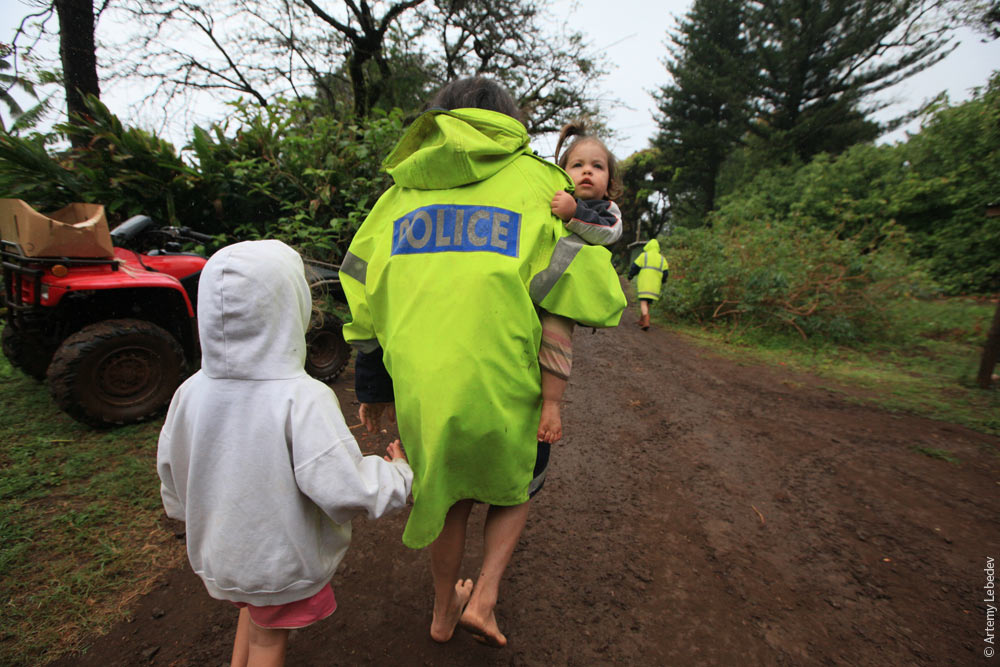
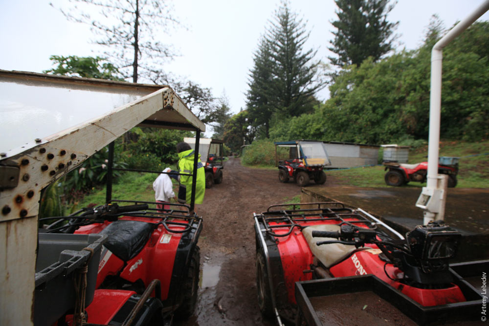
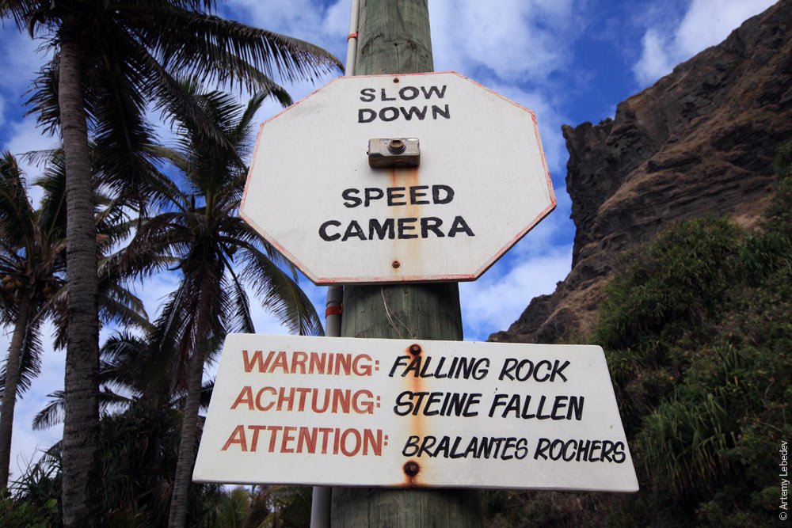
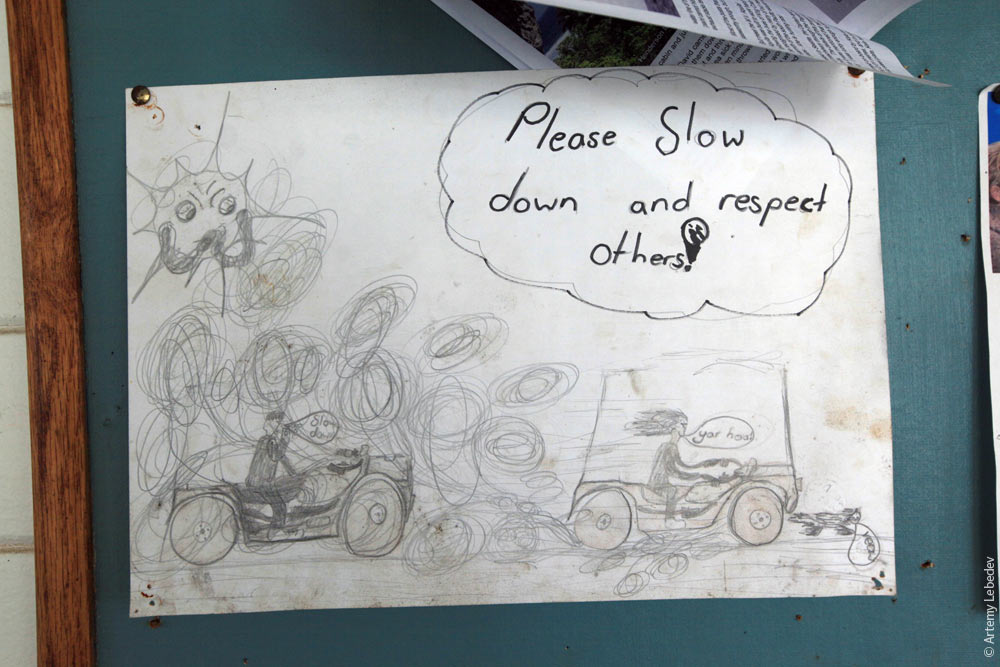
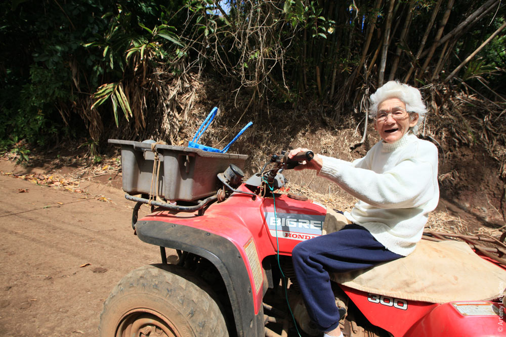
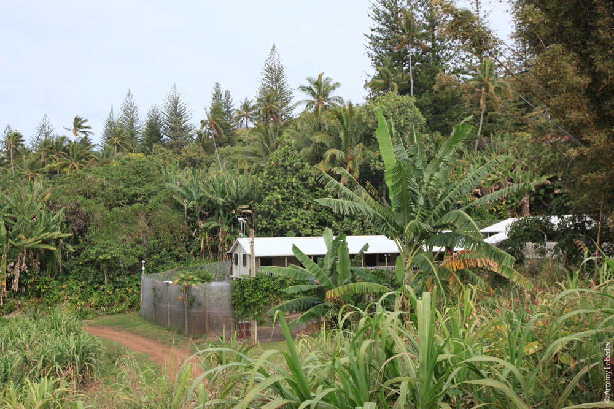

Police and Military
The Pitcairn Islands are an overseas territory of the United Kingdom; defence is the responsibility of the Ministry of Defence and Her Majesty's Armed Forces. In 2004, the islanders had about 20 guns among them, which they surrendered ahead of the sexual assault trials.

Potential extinction
As of July 2014, the total resident population of the Pitcairn Islands was 56, including the six temporary residents: an administrator, doctor, and police officer and each of their spouses. However, the actual permanent resident population was only 49 Pitcairners spread across 23 households. It is, however, rare for all 49 residents to be on-island at the same time; it is common for several residents to be off-island for varying lengths of time visiting family, for medical reasons, or to attend international conferences. As of November 2013 for instance, seven residents were off-island. A diaspora survey projected that by 2045, if nothing were done, only three people of working age would be left on the island, with the rest being very old. In addition, the survey revealed that residents who had left the island over the past decades showed little interest in coming back. Of the hundreds of emigrants contacted, only 33 were willing to participate in the survey and just 3 expressed a desire to return.
   Sexual assault trials of 2004
In 2004, charges were laid against seven men living on Pitcairn and six living abroad. This accounted for nearly a third of the male population. After extensive trials, most of the men were convicted, some with multiple counts of sexual encounters with children. On 25 October 2004, six men were convicted, including Steve Christian, the island's mayor at the time.After the six men lost their final appeal, the British government set up a prison on the island at Bob's Valley. The men began serving their sentences in late 2006. By 2010, all had served their sentences or been granted home detention status.
In 2010 the then mayor Mike Warren faced 25 charges of possessing images and videos of child pornography on his computer. An "entry clearance application" must be made for any child under the age of 16, prior to visiting Pitcairn, while adults visiting the island for periods of less than 14 days are not required to complete any application or visa request prior to arrival. As of 2016, The UK's Foreign and Commonwealth Office (FCO) does not allow their staff based on Pitcairn to be accompanied by their children.
